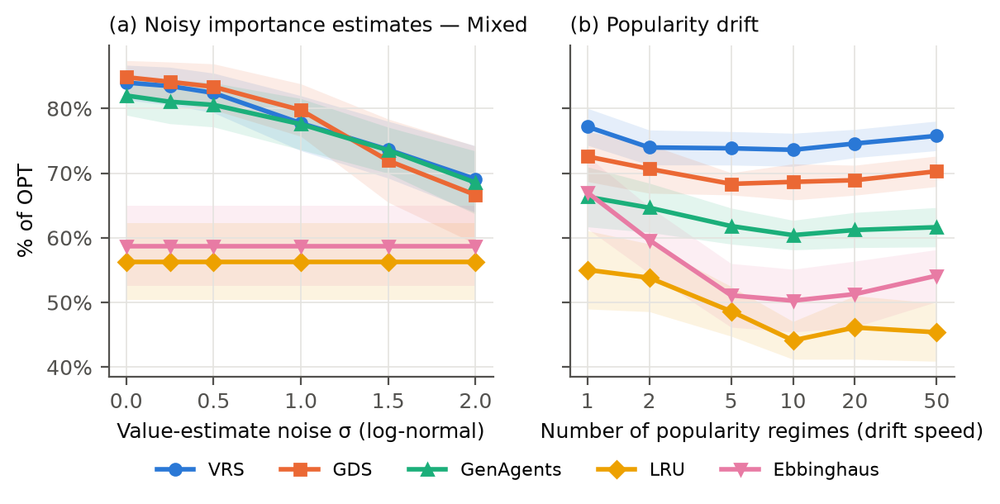
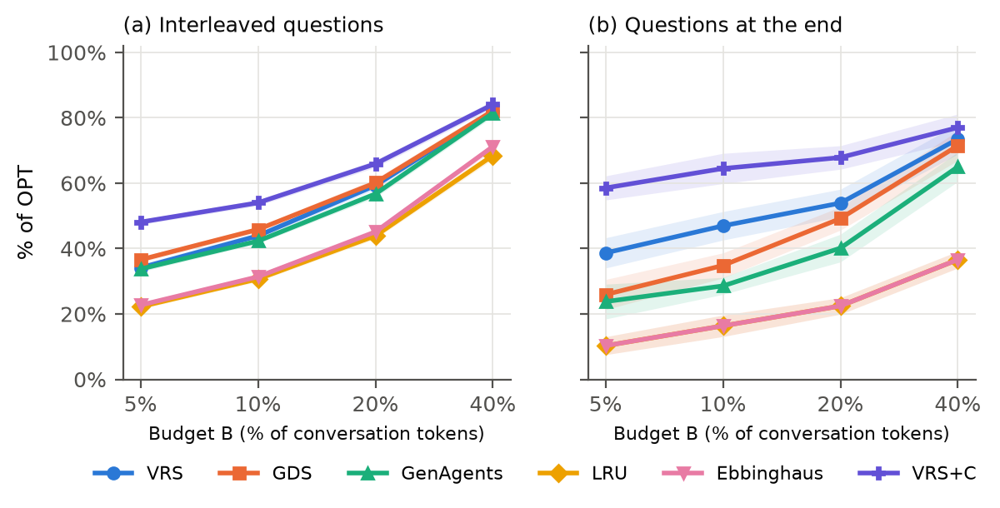

VRS به دست آوردبا تخمین بهتر قابل جبرانندانستن آینده (اجتنابناپذیر)
ایستا
76.88.314.9
محلیت زمانی
78.517.24.3
نادر-حیاتی
78.67.214.3
رانش
73.826.1
دستیار ترکیبی
82.411.46.2
در «رانش»، VRS به ۹۹٫۹٪ بهترین روش آنلاین ممکن رسید؛ بقیه فاصله فقط بهای ندانستن آینده است.
شکل ۴ مقاله
اگر حدس ارزش اشتباه باشد چه؟

نویز زیاد
حتی وقتی حدس ارزش تا ۷ برابر اشتباه است: VRS ۶۹٪، LRU ۵۶٪
تغییر علایق
Ebbinghaus از ۶۷٪ به ۵۰٪ سقوط کرد؛ VRS بین ۷۴ تا ۷۷٪ ماند
جدول ۲ و ۳ مقاله
هر سه جزء لازماند؛ خلاصه کردن هم کمک میکند
مطالعه حذفی: اگر یک جزء را برداریم
VRS کامل
78.0%
بدون اندازه
73.9%
بدون نرخ
69.3%
بدون ارزش
66.6%
اثر فشردهسازی (+C)
LRU → LRU+C
+0.1
GenAgents+C
+3.6
VRS → VRS+C
+4.4
فشردهسازی فقط وقتی کمک میکند که درست انتخاب کنی چه چیزی را خلاصه کنی.
آزمون Wilcoxon جفتی
آیا تفاوتها واقعیاند یا شانسی؟
مقایسه
اختلاف میانگین
درصد بُرد
p-value
GDS در برابر LRU
+17.1
۹۰٪
1e-40
VRS+C در برابر GDS
+5.5
۷۸٪
3e-17
VRS در برابر GenAgents
+7.6
۷۹٪
6e-18
VRS در برابر GDS
+1.3
۶۲٪
6e-4
داده واقعی: VRS با LLM در برابر بدون آن
+24.5
۱۰۰٪
3e-67
p-value کوچکتر از ۰٫۰۵ یعنی تفاوت معنادار است · ۲۵۰ جفت نمونه مصنوعی و ۴۰۰ جفت نمونه واقعی
داده واقعی
آزمایش روی مکالمات واقعی LoCoMo
۱۰ مکالمه بسیار طولانی · ۵٬۸۸۲ نوبت گفتگو · ۱٬۵۳۵ پرسش با شواهد مشخص
مدل Gemini 2.5 Flash به هر نوبت از ۱ تا ۱۰ نمره اهمیت داد، بدون دیدن پرسشها.
نمرهها پیشبینیکنندهاند: AUC = 0.825
نمره ۱
3%
نمره ۳
15%
نمره ۵
26%
نمره ۷
44%
نمره ۹
66%
نمره ۱۰
70%
چند درصد نوبتهای هر نمره، بعداً واقعاً لازم شدند
نتایج · داده واقعی
روی مکالمات واقعی (بودجه ۱۰٪)
تصادفی
25%
LRU
31%
VRS بدون LLM
19%
VRS با LLM
44%
GDS با LLM
46%
VRS+C
54%
GenAgents+C
61%
بزرگترین اهرم
نمره اهمیت LLM: ۱۲+ تا ۲۵+ واحد بهبود.
فشردهسازی
۲ تا ۵ برابر LRU شواهد نگه میدارد.
شکل ۶ مقاله
پرسشها کی میآیند، مهم است

پرسشها وسط گفتگو
GDS کمی جلوتر از VRS (۴۶٪ در برابر ۴۴٪)
پرسشها در پایان
VRS ۴۷٪، GDS ۳۵٪، LRU فقط ۱۶٪
تحلیل حساسیت
نتایج با تغییر تنظیمات پایدار میمانند
VRS+C با تنظیمات مختلف فشردهسازی (درصد از OPT)
ارزش حفظشده ۳۰٪
۶۰٪
۹۰٪
اندازه خلاصه ۱۰٪
80.8
89.1
99.2
۲۵٪
78.1
82.4
90.4
۵۰٪
—
78.3
82.1
۱۶ از ۱۶تنظیم توزیع داده که VRS+C در آن اول شد
با افزایش پراکندگی ارزش، فاصله VRS و LRU از ۱۶ به ۴۴ واحد رسید.
گزارش صادقانه
جاهایی که روش ما اول نشد
محلیت زمانی
وقتی خاطرهها فقط تازهشان به کار میآیند، GDS و LRU بهترند (۹۰٪ در برابر ۷۸٪).
VRS در برابر GDS
در ۳ سناریو برنده، در ۱ مساوی، در ۱ بازنده. در میانگین بودجه ۱۰٪ مساوی.
داده واقعی
GenAgents با فشردهساز ما، کمی از VRS+C بهتر شد.
پیام اصلی عوض نمیشود: آگاهی از ارزش همیشه برنده است؛ اما هیچ قانون حذفی همهجا اول نیست.
جمعبندی
فراموشی، یک قضاوت ارزشی است
روشهای کور به ارزش را برای اطلاعات حساس به کار نبرید
اول روی «حدس ارزش» سرمایهگذاری کنید
ارزش × نرخ ÷ اندازه را ترکیب کنید
برای حافظه کوتاهعمر، روشهای تازگیمحور کافیاند
قبل از پاک کردن، خلاصه کنید (با انتخاب آگاه از ارزش)
«درصد از OPT» گزارش کنید، نه نرخ برخورد
کارهای انجامشده
از ایده تا مقاله آماده انتشار
پیدا کردن موضوع بکر با بررسی ادبیات ۲۰۲۶
۶ نتیجه نظری با اثبات کامل
شبیهساز MemSim و حلکننده دقیق OPT
۲۵۰ نمونه مصنوعی + ۴۴۰ نمونه واقعی
نمرهدهی ۵٬۸۸۲ نوبت گفتگو با LLM
آزمون آماری Wilcoxon و تحلیل حساسیت
۳۰ مرجع تأییدشده با API رسمی arXiv
مقاله کامل به دو زبان + انتشار روی GitHub
قدم بعد: تبدیل به LaTeX و PDF، گرفتن معرفینامه arXiv، و نمایه شدن در Google Scholar.
زیرنویس هر صحنه زیر تصویر نمایش داده میشود. روایت صوتی فقط وقتی کار میکند که سیستم شما صدای فارسی داشته باشد. کلیدها: Space پخش/توقف، ← صحنه بعد، → صحنه قبل.